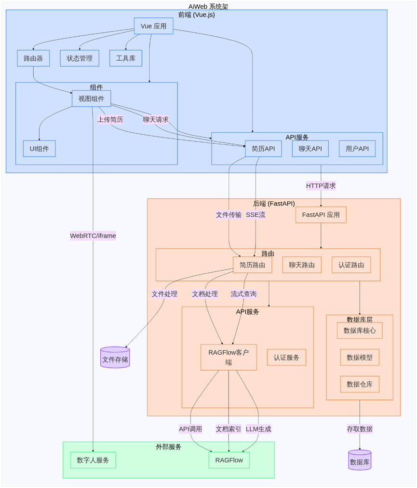

开发手册
本文档将系统阐述整个项目架构与开发目标，以帮助开发者充分了解项目。
项目整体架构
项目整体采用前后端分离、微服务的架构，目前的整体架构如下图所示：（AI绘制）

技术栈：
- 前端：vite（前端构建）+vue3（用户界面代码框架）+typescript+Element-Plus（前端UI组件库）
- 后端：python+fastapi+mysql（存储用户、token、身份验证数据）+ragflow（构建agent以及专属知识库、知识图谱、工作流、管理会话）
部署概览：
整体项目位于/home/jhyang/AiWeb，项目文件树：
AiWeb/
├── LiveTalking # Github开源数字人项目（已分支）
├── ragflow # RagFlow项目
├── webAi_backEnd # 后端项目
└── webAi_frontEnd # 前端项目
8010
- RagFlow：服务运行于docker容器ragflow-server，映射于宿主机的8080端口下
- webAi_backEnd：服务运行于端口8888
- mysql：服务运行于docker容器webai_backend_mysql，映射于宿主机端口3306
- webAi_frontEnd：服务运行于端口5180，由nginx反向代理
nginx代理配置：
server {
# 监听前端地址
listen 5180;
server_name 222.20.98.159;
location / {
root /home/jhyang/AiWeb/webAi_frontEnd/dist;
index index.html;
try_files $uri $uri/ /index.html;
}
# 反向代理后端API（所有以/api开头的请求转发到后端）
location /api {
proxy_pass http://localhost:8888; # 后端服务地址
proxy_set_header Host $host;
proxy_set_header X-Real-IP $remote_addr;
proxy_set_header X-Forwarded-For $proxy_add_x_forwarded_for;
proxy_set_header X-Forwarded-Proto $scheme;
# 可选：调整超时时间
proxy_connect_timeout 60s;
proxy_read_timeout 600s;
proxy_send_timeout 600s;
}
# 数字人API代理
location /digitalperson/ {
proxy_pass http://localhost:8010/;
# WebRTC必要配置
proxy_http_version 1.1;
proxy_set_header Upgrade $http_upgrade;
proxy_set_header Connection "upgrade";
proxy_set_header Host $host;
# 额外的WebRTC相关配置
proxy_set_header X-Real-IP $remote_addr;
proxy_set_header X-Forwarded-For $proxy_add_x_forwarded_for;
proxy_set_header X-Forwarded-Proto $scheme;
# 确保所有HTTP方法可用
proxy_method $request_method;
# 增加超时时间
proxy_connect_timeout 7d;
proxy_send_timeout 7d;
proxy_read_timeout 7d;
}
# WebSocket代理
location /ws {
proxy_pass http://localhost:8888; # 必须指向WebSocket后端地址
proxy_http_version 1.1;
proxy_set_header Upgrade $http_upgrade;
proxy_set_header Connection "upgrade";
proxy_set_header Host $host;
proxy_read_timeout 3600s;
proxy_send_timeout 3600s;
}
}
同时Fork并部署了github开源项目LiveTalking，专门用于数字人视频、音频的推流服务。
前端架构设计
前端服务项目结构：
src/
├── api # 与后端服务的api接口
│ ├── index.ts # 批量导出API，以供任何其他组件更方便的调用
│ ├── interviewApi.ts # AI面试API
│ ├── resumeApi.ts # 简历API
│ └── userApi.ts # 用户身份验证API
├── App.vue # 挂载应用，主界面
├── assets # 公共资源（如css样式、图片等资源）
├── components # 组件模块（可以模块化地插入到页面中）
│ ├── FloatingAvatar.vue # 浮动图像组件
│ ├── FloatingModel.vue # 浮动3D模型组件
│ ├── icons #封装成组件的图片资源
│ │ ├── IconCommunity.vue
│ │ ├── IconDocumentation.vue
│ │ ├── IconEcosystem.vue
│ │ ├── IconLogo.vue
│ │ ├── IconSupport.vue
│ │ └── IconTooling.vue
│ └── index.ts
├── layout # 布局组件
│ ├── Header.vue # 头栏，负责记录用户路由
│ └── SideBar.vue # 边栏，负责一级功能模块
├── main.ts # 网页应用入口文件，负责加载网页应用APP、加载插件以及初始化配置
├── router # 网页路由，负责建立url路径与之对应要渲染的组件的映射
│ └── index.ts
├── store # 状态管理仓库，负责管理全局变量
│ ├── index.ts
│ └── user.ts # 管理用户信息（包括token、验证信息）
├── utils # 实用typescript封装工具类
│ └── chatHistory.ts # 聊天会话管理类，集成实现会话管理
└── views # 与特定路由绑定视图组件，目录关系体现路由关系
├── analysis # 学业分析界面
│ ├── index.vue
│ ├── interview # 面试子界面
│ │ └── index.vue
│ └── resume # 简历子界面
│ └── index.vue
├── education # 教学科研界面
│ └── index.vue
├── error # 错误页面
│ └── index.vue
├── Home # 首页
│ └── index.vue
├── Login # 登录页面
│ └── index.vue
└── student # 学生事务页面
└── index.vue
使用pinia插件完成进行全局状态管理
后端架构设计
.
├── app
│ ├── api # 与其他微服务相关的api
│ │ ├── auth # 身份验证相关api(TODO: will delete)
│ │ ├── digital_human # 数字人服务相关api
│ │ └── ragflow # ragflow的http接口
│ ├── config.py # 用于引入和管理环境变量
│ ├── database # 数据库 (TODO: move to /api)
│ │ ├── core.py # 数据库接口代码
│ │ ├── models.py # 数据库中的数据模式
│ ├── dependencies # 依赖注入函数
│ │ └── index.py
│ ├── main.py # 入口主函数
│ ├── routers # 路由请求处理
│ │ ├── auth.py # 身份验证请求处理
│ │ ├── digital_person.py # 数字人相关请求处理
│ │ ├── interview.py # 面试模块相关请求处理
│ │ └── resume.py # 简历模块相关请求处理
│ └── schema # 类型验证
│ ├── auth.py
│ └── response.py
├── docker-compose.yml # 后端mysql数据库的docker配置文件，用于快速部署mysql
└── .env # 环境变量，与代码隔离，包括一些密钥
如何替换数字人形象
需要准备： - 一段嘴唇轮廓清晰、人物正脸、姿态稳定的一段mp4格式视频
将自己准备好的视频放在项目LiveTalking/wav2lip文件夹下，然后终端运行：
python genavatar.py --video_path xxx.mp4 --img_size 256 --avatar_id wav2lip256_avatar1